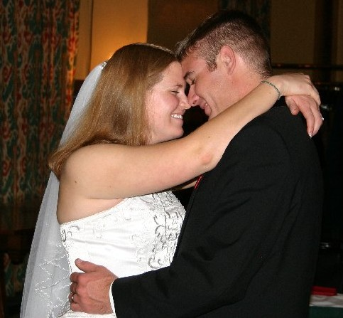

Remember the table cameras? |
 |
Well folks, here are the pictures from the first three of those little table cameras. One of them may contain the pictures you took! Sorry some are grainy ... I guess it was kinda dark in there. There are three more cameras containing photos, each of which had enough film remaining on them that we are going to give them to Brian and Kate for them to expose the remaining shots. When they have taken the rest of the shots, we plan to develop the cameras for them if they so desire.
Enjoy!